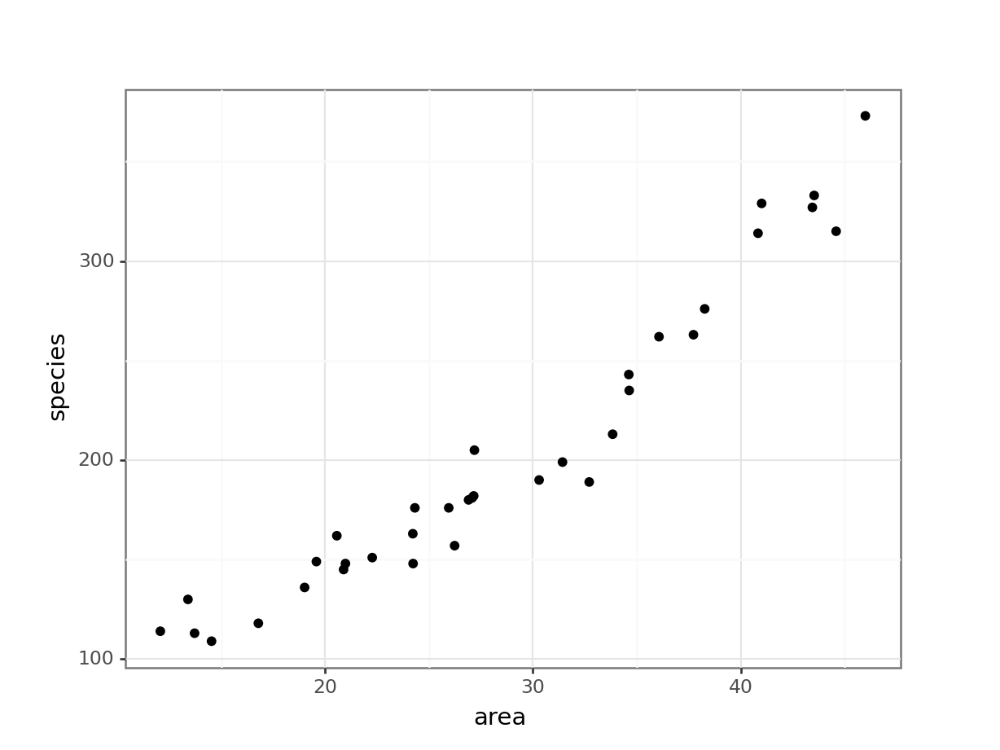
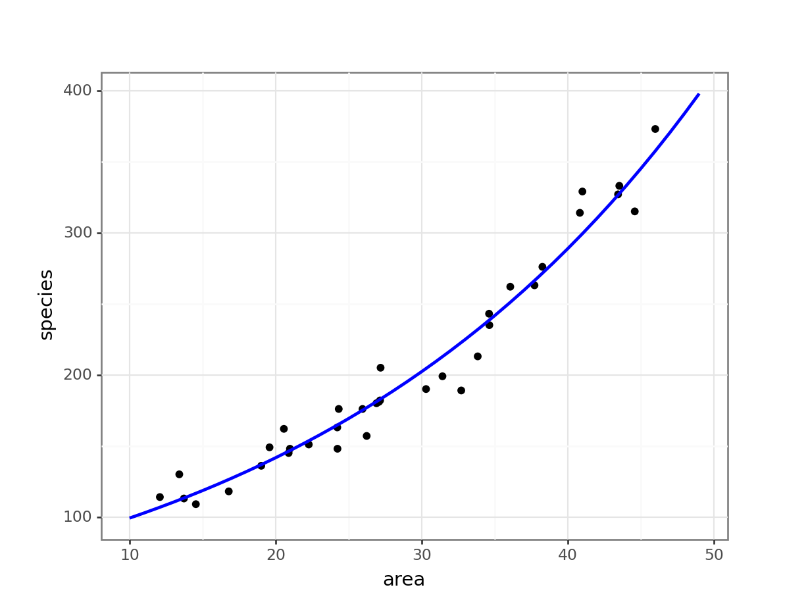
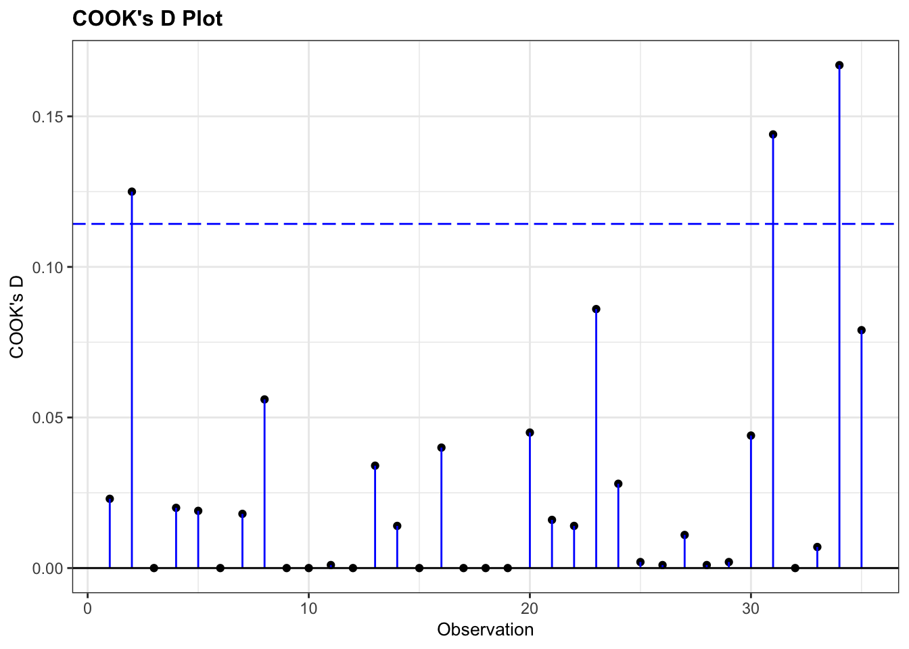
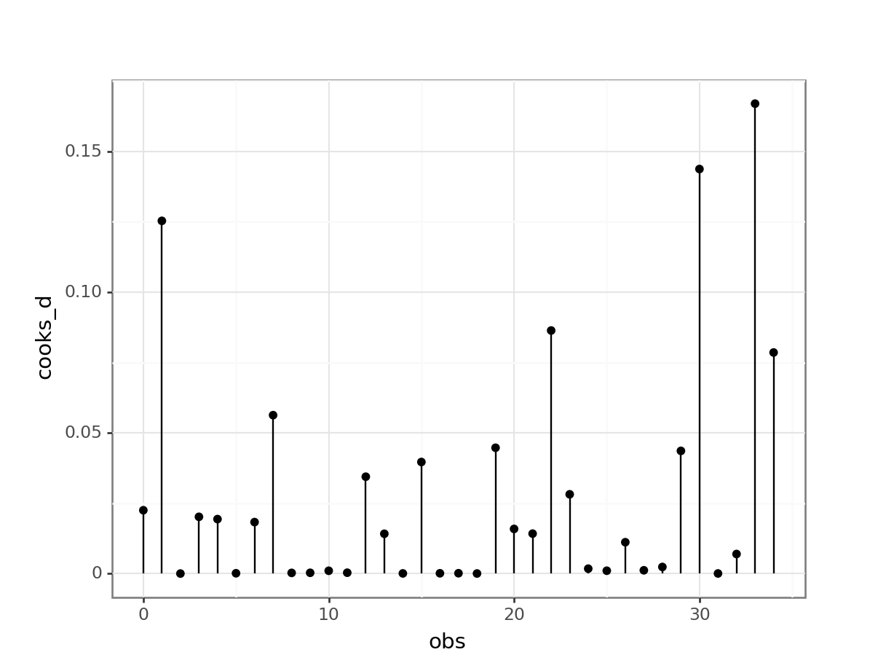
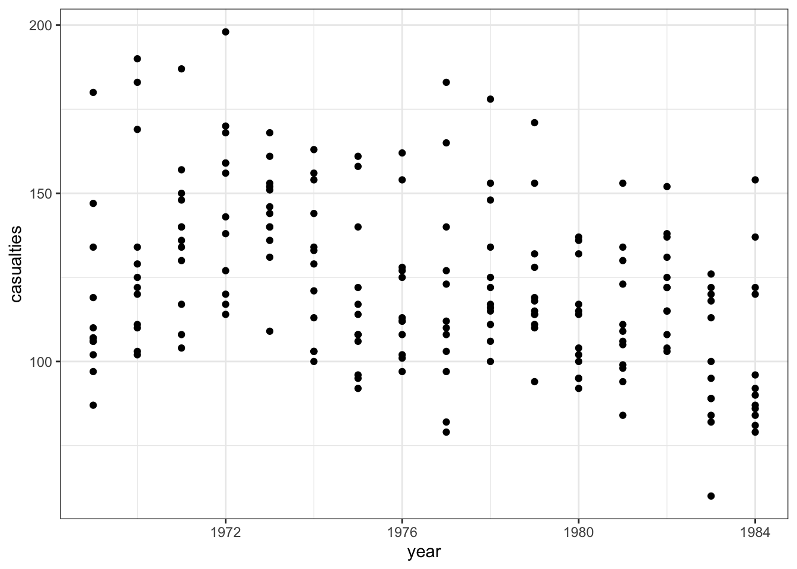
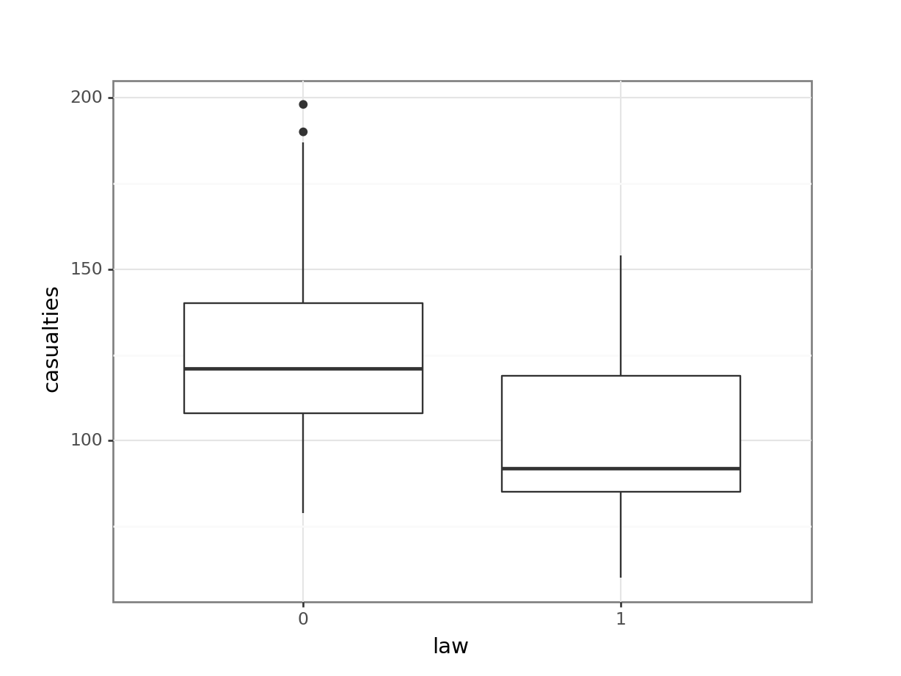
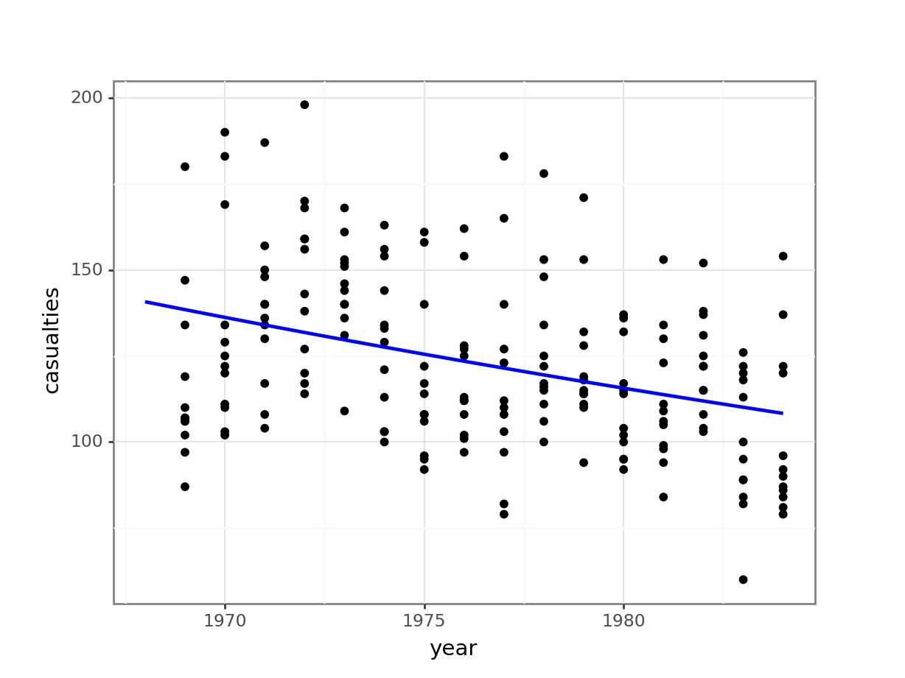

library(ggResidpanel)
library(tidyverse)12 Analysing count data
Learning outcomes
Questions
- How do we analyse count data?
Objectives
- Be able to perform a poisson regression on count data
12.1 Libraries and functions
Click to expand
12.1.1 Libraries
12.1.2 Functions
# create diagnostic plots
ggResidpanel::resid_panel()12.1.3 Libraries
# A maths library
import math
# A Python data analysis and manipulation tool
import pandas as pd
# Python equivalent of `ggplot2`
from plotnine import *
# Statistical models, conducting tests and statistical data exploration
import statsmodels.api as sm
# Convenience interface for specifying models using formula strings and DataFrames
import statsmodels.formula.api as smf
# Needed for additional probability functionality
from scipy.stats import *12.1.4 Functions
The examples in this section use the following data sets:
data/islands.csv
This is a data set comprising 35 observations of two variables (one dependent and one predictor). This records the number of species recorded on different small islands along with the area (km2) of the islands. The variables are species and area.
The second data set is on seat belts.
The seatbelts data set is a multiple time-series data set that was commissioned by the Department of Transport in 1984 to measure differences in deaths before and after front seat belt legislation was introduced on 31st January 1983. It provides monthly total numerical data on a number of incidents including those related to death and injury in Road Traffic Accidents (RTA’s). The data set starts in January 1969 and observations run until December 1984.
You can find the file in data/seatbelts.csv
12.2 Load and visualise the data
First we load the data, then we visualise it.
islands <- read_csv("data/islands.csv")Let’s have a glimpse at the data:
islands# A tibble: 35 × 2
species area
<dbl> <dbl>
1 114 12.1
2 130 13.4
3 113 13.7
4 109 14.5
5 118 16.8
6 136 19.0
7 149 19.6
8 162 20.6
9 145 20.9
10 148 21.0
# ℹ 25 more rowsislands_py = pd.read_csv("data/islands.csv")Let’s have a glimpse at the data:
islands_py.head() species area
0 114 12.076133
1 130 13.405439
2 113 13.723525
3 109 14.540359
4 118 16.792122Looking at the data, we can see that there are two columns: species, which contains the number of species recorded on each island and area, which contains the surface area of the island in square kilometers.
We can plot the data:
ggplot(islands, aes(x = area, y = species)) +
geom_point()
(ggplot(islands_py, aes(x = "area", y = "species")) +
geom_point())
It looks as though area may have an effect on the number of species that we observe on each island. We note that the response variable is count data and so we try to construct a Poisson regression.
12.3 Constructing a model
glm_isl <- glm(species ~ area,
data = islands, family = "poisson")and we look at the model summary:
summary(glm_isl)
Call:
glm(formula = species ~ area, family = "poisson", data = islands)
Coefficients:
Estimate Std. Error z value Pr(>|z|)
(Intercept) 4.241129 0.041322 102.64 <2e-16 ***
area 0.035613 0.001247 28.55 <2e-16 ***
---
Signif. codes: 0 '***' 0.001 '**' 0.01 '*' 0.05 '.' 0.1 ' ' 1
(Dispersion parameter for poisson family taken to be 1)
Null deviance: 856.899 on 34 degrees of freedom
Residual deviance: 30.437 on 33 degrees of freedom
AIC: 282.66
Number of Fisher Scoring iterations: 3The output is strikingly similar to the logistic regression models (who’d have guessed, eh?) and the main numbers to extract from the output are the two numbers underneath Estimate.Std in the Coefficients table:
(Intercept) 4.241129
area 0.035613# create a generalised linear model
model = smf.glm(formula = "species ~ area",
family = sm.families.Poisson(),
data = islands_py)
# and get the fitted parameters of the model
glm_isl_py = model.fit()Let’s look at the model output:
print(glm_isl_py.summary()) Generalized Linear Model Regression Results
==============================================================================
Dep. Variable: species No. Observations: 35
Model: GLM Df Residuals: 33
Model Family: Poisson Df Model: 1
Link Function: Log Scale: 1.0000
Method: IRLS Log-Likelihood: -139.33
Date: Fri, 14 Jun 2024 Deviance: 30.437
Time: 13:05:13 Pearson chi2: 30.3
No. Iterations: 4 Pseudo R-squ. (CS): 1.000
Covariance Type: nonrobust
==============================================================================
coef std err z P>|z| [0.025 0.975]
------------------------------------------------------------------------------
Intercept 4.2411 0.041 102.636 0.000 4.160 4.322
area 0.0356 0.001 28.551 0.000 0.033 0.038
==============================================================================These are the coefficients of the Poisson model equation and need to be placed in the following formula in order to estimate the expected number of species as a function of island size:
\[ E(species) = \exp(4.24 + 0.036 \times area) \]
Interpreting this requires a bit of thought (not much, but a bit). The intercept coefficient, 4.24, is related to the number of species we would expect on an island of zero area (this is statistics, not real life. You’d do well to remember that before you worry too much about what that even means). But in order to turn this number into something meaningful we have to exponentiate it. Since exp(4.24) ≈ 70, we can say that the baseline number of species the model expects on any island is 70. This isn’t actually the interesting bit though.
The coefficient of area is the fun bit. For starters we can see that it is a positive number which does mean that increasing area leads to increasing numbers of species. Good so far.
But what does the value 0.036 actually mean? Well, if we exponentiate it as well, we get exp(0.036) ≈ 1.04. This means that for every increase in area of 1 km2 (the original units of the area variable), the number of species on the island is multiplied by 1.04. So, an island of area km2 will have \(1.04 \times 70 \approx 72\) species.
So, in order to interpret Poisson coefficients, you have to exponentiate them.
12.4 Plotting the Poisson regression
ggplot(islands, aes(area, species)) +
geom_point() +
geom_smooth(method = "glm", se = FALSE, fullrange = TRUE,
method.args = list(family = "poisson")) +
xlim(10,50)`geom_smooth()` using formula = 'y ~ x'
model = pd.DataFrame({'area': list(range(10, 50))})
model["pred"] = glm_isl_py.predict(model)
model.head() area pred
0 10 99.212463
1 11 102.809432
2 12 106.536811
3 13 110.399326
4 14 114.401877(ggplot(islands_py,
aes(x = "area",
y = "species")) +
geom_point() +
geom_line(model, aes(x = "area", y = "pred"), colour = "blue", size = 1))
12.5 Assumptions
As we mentioned earlier, Poisson regressions require that the variance of the data at any point is the same as the mean of the data at that point. We checked that earlier by looking at the residual deviance values.
We can look for influential points using the Cook’s distance plot:
resid_panel(glm_isl, plots = c("cookd"))
# extract the Cook's distances
glm_isl_py_resid = pd.DataFrame(glm_isl_py.
get_influence().
summary_frame()["cooks_d"])
# add row index
glm_isl_py_resid['obs'] = glm_isl_py_resid.reset_index().indexWe can use these to create the plot:
(ggplot(glm_isl_py_resid,
aes(x = "obs",
y = "cooks_d")) +
geom_segment(aes(x = "obs", y = "cooks_d", xend = "obs", yend = 0)) +
geom_point())
None of our points have particularly large Cook’s distances and so life is rosy.
12.6 Assessing significance
We can ask the same three questions we asked before.
- Is the model well-specified?
- Is the overall model better than the null model?
- Are any of the individual predictors significant?
Again, in this case, questions 2 and 3 are effectively asking the same thing because we still only have a single predictor variable.
To assess if the model is any good we’ll again use the residual deviance and the residual degrees of freedom.
1 - pchisq(30.437, 33)[1] 0.5953482chi2.sf(30.437, 33)0.5953481872979622This gives a probability of 0.60. This suggests that this model is actually a reasonably decent one and that the data are pretty well supported by the model. For Poisson models this has an extra interpretation. This can be used to assess whether we have significant over-dispersion in our data.
For a Poisson model to be appropriate we need that the variance of the data to be exactly the same as the mean of the data. Visually, this would correspond to the data spreading out more for higher predicted values of species. However, we don’t want the data to spread out too much. If that happens then a Poisson model wouldn’t be appropriate.
The easy way to check this is to look at the ratio of the residual deviance to the residual degrees of freedom (in this case 0.922). For a Poisson model to be valid, this ratio should be about 1. If the ratio is significantly bigger than 1 then we say that we have over-dispersion in the model and we wouldn’t be able to trust any of the significance testing that we are about to do using a Poisson regression.
Thankfully the probability we have just created (0.60) is exactly the right one we need to look at to assess whether we have significant over-dispersion in our model.
Secondly, to assess whether the overall model, with all of the terms, is better than the null model we’ll look at the difference in deviances and the difference in degrees of freedom:
1 - pchisq(856.899 - 30.437, 34 - 33)[1] 0chi2.sf(856.899 - 30.437, 34 - 33)9.524927068555617e-182This gives a reported p-value of pretty much zero, which is rather small. So, yes, this model is better than nothing at all and species does appear to change with some of our predictors
Finally, we’ll construct an analysis of deviance table to look at the individual terms:
anova(glm_isl , test = "Chisq")Analysis of Deviance Table
Model: poisson, link: log
Response: species
Terms added sequentially (first to last)
Df Deviance Resid. Df Resid. Dev Pr(>Chi)
NULL 34 856.90
area 1 826.46 33 30.44 < 2.2e-16 ***
---
Signif. codes: 0 '***' 0.001 '**' 0.01 '*' 0.05 '.' 0.1 ' ' 1The p-value in this table is just as small as we’d expect given our previous result (<2.2e-16 is pretty close to 0), and we have the nice consistent result that area definitely has an effect on species.
As mentioned before, this is not quite possible in Python.
12.7 Exercises
12.7.1 Seat belts
Exercise
Level:
For this exercise we’ll be using the data from data/seatbelts.csv.
I’d like you to do the following:
- Load the data
- Visualise the data and create a poisson regression model
- Plot the regression model on top of the data
- Assess if the model is a decent predictor for the number of fatalities
Answer
Load and visualise the data
First we load the data, then we visualise it.
seatbelts <- read_csv("data/seatbelts.csv")seatbelts_py = pd.read_csv("data/seatbelts.csv")Let’s have a glimpse at the data:
seatbelts_py.head() casualties drivers front rear ... van_killed law year month
0 107 1687 867 269 ... 12 0 1969 Jan
1 97 1508 825 265 ... 6 0 1969 Feb
2 102 1507 806 319 ... 12 0 1969 Mar
3 87 1385 814 407 ... 8 0 1969 Apr
4 119 1632 991 454 ... 10 0 1969 May
[5 rows x 10 columns]The data tracks the number of drivers killed in road traffic accidents, before and after the seat belt law was introduced. The information on whether the law was in place is encoded in the law column as 0 (law not in place) or 1 (law in place).
There are many more observations when the law was not in place, so we need to keep this in mind when we’re interpreting the data.
First we have a look at the data comparing no law vs law:
We have to convert the law column to a factor, otherwise R will see it as numerical.
seatbelts %>%
ggplot(aes(as_factor(law), casualties)) +
geom_boxplot()
The data are recorded by month and year, so we can also display the number of drivers killed by year:
seatbelts %>%
ggplot(aes(year, casualties)) +
geom_point()
We have to convert the law column to a factor, otherwise R will see it as numerical.
(ggplot(seatbelts_py,
aes(x = seatbelts_py.law.astype(object),
y = "casualties")) +
geom_boxplot())
The data are recorded by month and year, so we can also display the number of casualties by year:
(ggplot(seatbelts_py,
aes(x = "year",
y = "casualties")) +
geom_point())
The data look a bit weird. There is quite some variation within years (keeping in mind that the data are aggregated monthly). The data also seems to wave around a bit… with some vague peaks (e.g. 1972 - 1973) and some troughs (e.g. around 1976).
So my initial thought is that these data are going to be a bit tricky to interpret. But that’s OK.
Constructing a model
glm_stb <- glm(casualties ~ year,
data = seatbelts, family = "poisson")and we look at the model summary:
summary(glm_stb)
Call:
glm(formula = casualties ~ year, family = "poisson", data = seatbelts)
Coefficients:
Estimate Std. Error z value Pr(>|z|)
(Intercept) 37.168958 2.796636 13.29 <2e-16 ***
year -0.016373 0.001415 -11.57 <2e-16 ***
---
Signif. codes: 0 '***' 0.001 '**' 0.01 '*' 0.05 '.' 0.1 ' ' 1
(Dispersion parameter for poisson family taken to be 1)
Null deviance: 984.50 on 191 degrees of freedom
Residual deviance: 850.41 on 190 degrees of freedom
AIC: 2127.2
Number of Fisher Scoring iterations: 4(Intercept) 37.168958
year -0.016373# create a linear model
model = smf.glm(formula = "casualties ~ year",
family = sm.families.Poisson(),
data = seatbelts_py)
# and get the fitted parameters of the model
glm_stb_py = model.fit()print(glm_stb_py.summary()) Generalized Linear Model Regression Results
==============================================================================
Dep. Variable: casualties No. Observations: 192
Model: GLM Df Residuals: 190
Model Family: Poisson Df Model: 1
Link Function: Log Scale: 1.0000
Method: IRLS Log-Likelihood: -1061.6
Date: Fri, 14 Jun 2024 Deviance: 850.41
Time: 13:05:15 Pearson chi2: 862.
No. Iterations: 4 Pseudo R-squ. (CS): 0.5026
Covariance Type: nonrobust
==============================================================================
coef std err z P>|z| [0.025 0.975]
------------------------------------------------------------------------------
Intercept 37.1690 2.797 13.291 0.000 31.688 42.650
year -0.0164 0.001 -11.569 0.000 -0.019 -0.014
====================================================================================================
coef
----------------------
Intercept 37.1690
year -0.0164
======================These are the coefficients of the Poisson model equation and need to be placed in the following formula in order to estimate the expected number of species as a function of island size:
\[ E(casualties) = \exp(37.17 - 0.164 \times year) \]
Assessing significance
Is the model well-specified?
1 - pchisq(850.41, 190)[1] 0chi2.sf(850.41, 190)3.1319689119997022e-84This value indicates that the model is actually pretty bad. Remember that this value gives you a measure for “the probability that this model is good”. In this case, that’s a very low probability.
How about the overall fit, compared to the null model?
1 - pchisq(984.50 - 850.41, 191 - 190)[1] 0First we need to define the null model:
# create a linear model
model = smf.glm(formula = "casualties ~ 1",
family = sm.families.Poisson(),
data = seatbelts_py)
# and get the fitted parameters of the model
glm_stb_null_py = model.fit()
print(glm_stb_null_py.summary()) Generalized Linear Model Regression Results
==============================================================================
Dep. Variable: casualties No. Observations: 192
Model: GLM Df Residuals: 191
Model Family: Poisson Df Model: 0
Link Function: Log Scale: 1.0000
Method: IRLS Log-Likelihood: -1128.6
Date: Fri, 14 Jun 2024 Deviance: 984.50
Time: 13:05:15 Pearson chi2: 1.00e+03
No. Iterations: 4 Pseudo R-squ. (CS): 1.942e-13
Covariance Type: nonrobust
==============================================================================
coef std err z P>|z| [0.025 0.975]
------------------------------------------------------------------------------
Intercept 4.8106 0.007 738.670 0.000 4.798 4.823
==============================================================================chi2.sf(984.50 - 850.41, 191 - 190)5.2214097202831414e-31This indicates that the model is at least markedly better than the null model.
Plotting the regression
ggplot(seatbelts, aes(year, casualties)) +
geom_point() +
geom_smooth(method = "glm", se = FALSE, fullrange = TRUE,
method.args = list(family = poisson)) +
xlim(1970, 1985)
model = pd.DataFrame({'year': list(range(1968, 1985))})
model["pred"] = glm_stb_py.predict(model)
model.head() year pred
0 1968 140.737690
1 1969 138.452153
2 1970 136.203733
3 1971 133.991827
4 1972 131.815842(ggplot(seatbelts_py,
aes(x = "year",
y = "casualties")) +
geom_point() +
geom_line(model, aes(x = "year", y = "pred"), colour = "blue", size = 1))
Conclusions
Overall, the model we constructed doesn’t seem to be a decent predictor for the number of fatalities.
12.7.2 Seat belts extended
12.8 Summary
Key points
- Poisson regression is useful when dealing with count data